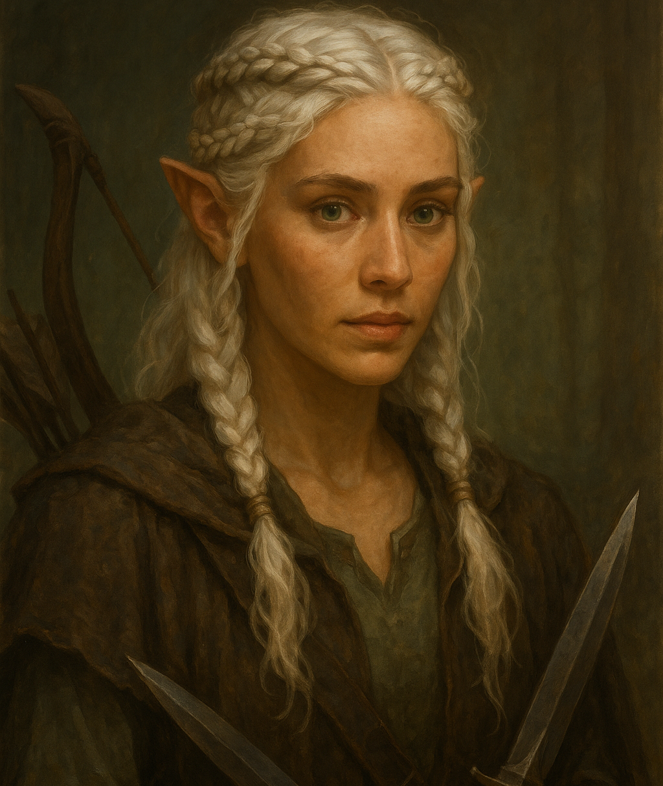

Meet the Guild

Sylwen
Guild Founder
Expert in magic and fractured reality research.

The Crystal Warden
Guardian
Protects the Heart of Mirage and the integrity of the system.

The Shadow
Information Keeper
Collects secrets and knowledge across realms.